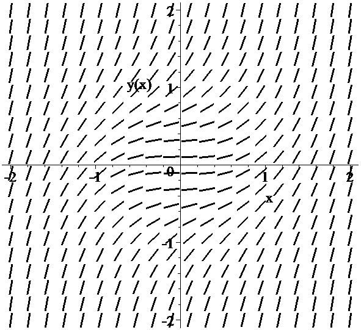

Геометрическая интерпретация ОДУ первого порядка, разрешенного относительно производной \(y'=f(x, y)\) \((1)\)
График решения \(y =y(x)\) дифференциального уравнения \((1) \) называется его \(\textbf{интегральной кривой}\).
В геометрических терминах уравнение \((1)\) выражает следующий факт:
Кривая на плоскости \((x,y)\) является интегральной кривой уравнения \(y'=f(x, y)\) тогда и только тогда,когда в любой точке \((x_0,y_0)\) этой кривой она имеет касательную с угловым коэффициентом \(k = f(x_0, y_0)\).
Таким образом, зная правую часть уравнения \((1)\), мы можем заранее построить касательные ко всем интегральным кривым во всех точках: для этого каждой точке \((x_0,y_0)\) области \(\Gamma\) нужно сопоставить проходящую через нее прямую с угловым коэффициентом \(k = f(x_0, y_0)\). Полученное соответствие между точками плоскости и проходящими через нее прямыми называется \(\textbf{полем направления}\) уравнения \((1)\).
Конечно, фактически поле направлений можно построить лишь в виде достаточно густой сетки отрезков с отмеченными на них точками (см. рис.). После этого задача построения интегральных кривых становится похожей на отыскание нужного пути в большом парке, снабженном густой сетью стрелок-указателей.

Задача Коши с геометрической точки зрения заключается в нахождении интегральной кривой, проходящей через заданную точку \((x_0,y_0)\).
Теорема существования и единственности утверждает, что через каждую точку области \(\Gamma\), в которой непрерывны \(f(x,y)\) и \(f'_y(x,y)\), проходит интегральная кривая, и притом единственная.

Вместо уравнения \(y'=f(x, y)\) \((1)\) можно рассматривать уравнение \[M(x,y)\,dx+N(x,y)\,dy=0 \hspace{2cm}(4) \] записанное \(\textbf{в дифференциальной форме}\), оно содержит дифференциалы искомой функции и независимой переменной. Вообще говоря, здесь переменные \(x\) и \(y\) являются равноправными, поэтому рассматривают зависимости как \(y\) от \(x\), так и \(x\) от \(y\).
Уравнение \((4)\) может быть получено из уравнения \((1)\) следующим образом: \(\frac{dy}{dx}=f(x,y)\), или \(f(x,y)dx-dy=0\).
Обратно, там, где \(N(x,y)\ne 0\) уравнение \((1)\) преобразуется к виду \((4)\).
Лишь немногие обыкновенные дифференциальные уравнения допускают интегрирование в квадратурах т. е. выражение общего решения через элементарные функции и интегралы от них.
Термин "квадратура", означает взятие неопределенного интеграла и объясняется тем, что интегралами выражают площади фигур, а задача вычисления площади фигуры с древних времен называлась квадрированием (например, "квадратура круга").
Уравнение \(y'=f(x, y)\) \((1)\) в общем случае не интегрируется, т.е. нет способа нахождения решения при произвольной функции \(f(x,y)\). Поэтому приходится рассматривать такие частные виды этой функции, при которых можно указать способ решения. Такие уравнения относят к интегрируемым типам.